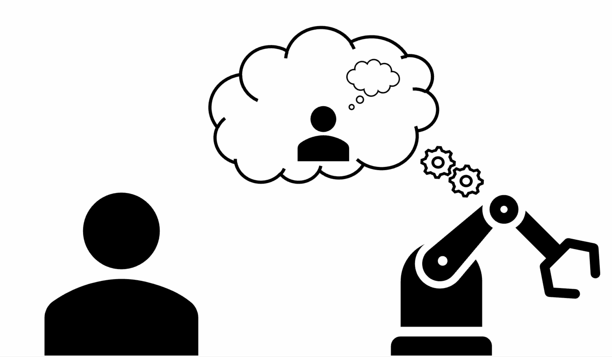
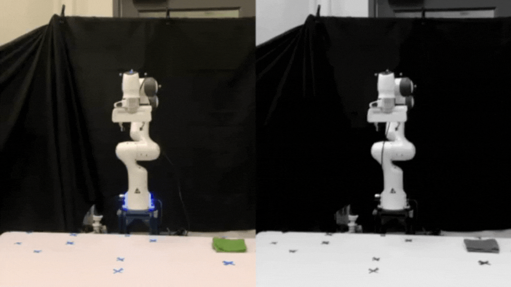

Self-driving Car
Built a self-driving race-car for MIT competition. Came second place in the race.
View details →
PhD Student in Computer Science
University of Oxford · Department of Computer Science
I am a researcher working on human-AI and human-robot interaction. Currently, I am advised by Prof. Niki Trigoni and Andrew Markham and collaborate with Prof. Serena Booth. Formerly at MIT's Interactive Robotics Group, Wellesley, and intern at Microsoft.
Human Robot Interaction Conference, 2026
When people communicate, they often express their intent imperfectly, and human collaborators routinely compensate for these mistakes without issue. For example, if Alice asks for a spatula while serving soup, Bob may infer her intent and bring a ladle instead. This raises a key question for human–robot collaboration: should robots follow instructions literally or should they infer and act on human intent? We study how people expect robots to respond to ambiguous or incorrect instructions in collaborative kitchen scenarios. In this user study, participants either act directly on behalf of a robot or indirectly in observing a robot that may depart from literal instructions to pursue the inferred intent. We find that people generally prefer robots to take some action rather than refuse to comply, although people expect robots to attempt to satisfy the literal instruction (i.e., by thoroughly searching the scene) before taking an imperfect action to satisfy the intent. As large language models (LLMs) are increasingly used to model common sense, we conduct a pilot study to assess whether LLMs make the same decisions as human users about when robots should reinterpret requests.
#
Transactions on Human-Robot Interaction, Vol.15, No. 2, 2026.
Robot learning from humans has been proposed and researched for several decades as a means to enable robots to learn new skills or adapt existing ones to new situations. Recent advances in AI, including learning approaches like reinforcement learning and architectures like transformers and foundation models, combined with access to massive datasets, have created attractive opportunities to apply those data-hungry techniques to this problem. We argue that the focus on massive amounts of pre-collected data, and the resulting learning paradigm, where humans demonstrate and robots learn in isolation, is overshadowing a specialized area of work we term Human-Interactive Robot Learning (HIRL). This paradigm, wherein robots and humans interact during the learning process, is at the intersection of multiple fields (AI, robotics, human–computer interaction, design and others) and holds unique promise. Using HIRL, robots can achieve greater sample efficiency (as humans can provide task knowledge through interaction), align with human preferences (as humans can guide the robot behavior toward their expectations), and explore more meaningfully and safely (as humans can utilize domain knowledge to guide learning and prevent catastrophic failures). This can result in robotic systems that can more quickly and easily adapt to new tasks in human environments. The objective of this article is to provide a broad and consistent overview of HIRL research and to guide researchers toward understanding the scope of HIRL, and current open or underexplored challenges related to four themes—namely, human, robot learning, interaction, and broader context. The article includes concrete use cases to illustrate the interaction between these challenges and inspire further research according to broad recommendations and a call for action for the growing HIRL community.
@article{baraka2026hirl,
title={Human-Interactive Robot Learning: Definition, Challenges, and Recommendations},
author={Baraka, Kim and Idrees, Ifrah and Faulkner, Taylor Kessler and others},
journal={ACM Transactions on Human-Robot Interaction},
volume={15},
number={2},
year={2026}
}

HRI Pioneers @ Human-Robot Interaction Conference, 2024
As we begin to coexist with robots, we must be able to anticipate each other’s future actions to avoid dangerous or inefficient situations. How can we build up human and robot conceptual models to predict how each other will behave? To do this, I study how to apply human concept learning theories, like variation theory, to human-robot interaction. I have found that the contrast step of variation theory (showing contrasting examples of policies when learning about robot motions) improves people’s ability to predict motion in unseen settings. For my proposed PhD, I seek to connect this idea of improving a human’s model of the robot with enabling the robot to correct the human’s model or alter its own behavior based on its model of the shortcomings in the human’s understanding.
@inproceedings{10.1145/3610978.3638358,
abbr={HRI Pioneers},
title = {Building Each Other Up: {{Using}} Variation Theory to Build and Correct Human Mental Models of Robots},
booktitle = {Companion of the 2024 {{ACM}}/{{IEEE}} International Conference on Human-Robot Interaction},
author = {Horter, Tiffany},
year = {2024},
series = {Hri '24},
pages = {103--105},
publisher = {Association for Computing Machinery},
address = {New York, NY, USA},
doi = {10.1145/3610978.3638358},
isbn = {9798400703232},
pdf = {https://dl.acm.org/doi/abs/10.1145/3610978.3638358?download=true},
keywords = {cognitive science,mental models,robot motion,variation theory},
}
Wellesley Senior Thesis, 2024
To collaborate effectively and safely with machine partners, it is essential to understand and be able to predict how they will behave. This thesis explores how using variation theory [1], a human-concept learning theory from cognitive science, to select training demonstrations of agent/robot behavior impacts people’s understanding of how the agent will act. By helping people improve their mental model of the artificial agents they interact with, the goal is to improve people’s ability to predict their particular machine’s behavior. To best teach people a concept, variation theory proposes a teaching method composed of four steps: familiarization, contrast, generalization, and fusion [1]. In prior work [2], the contrast step was compared to familiarization in the domain of a robotic arm’s movement, and results suggested that contrast particularly helped people’s understanding in unseen scenarios. In this study, the first three steps of variation were tested to determine which steps are most beneficial to human’s learning of an agent’s behavior in a self-driving domain and which, therefore, should be prioritized when training. To test differences in participants’ ability to predict across these different teaching methods, a user study was run to establish the efficacy of each method by using each method to train people on various policies of a self-driving car’s motion. Results suggested that being shown the combined steps of variation theory improve people’s ability to predict agent behavior, especially in scenarios they were trained with. However, the step of generalization was particularly helpful for scenarios that subjects had not encountered, improving accuracy from familiarization by 9%. Using the full steps of variation theory also increased people’s trust in the agent, but results appeared to be policy-dependent. Interestingly, trust in the agent appears separate from people’s true understanding of the agent’s policy – though contrast had the lowest overall correctness, people trained with that method had the highest trust in their agent at 65.9%.
@phdthesis{Horter.2024,
title = {Getting {{In Your Robot}}'s {{Head}}: {{Building Mental Models}} of {{Robots Using Human-Concept Learning}}},
author = {Horter, Tiffany, and Gadiraju, Vinitha and Booth, Serena and Shah, Julie A.},
year = {2024},
school = {Wellesley College},
url = {https://repository.wellesley.edu/node/49369},
}

Workshop on Human-Interactive Robot Learning @ Human-Robot Interaction Conference, 2023
Learning how robots move is difficult, but theories of human concept learning can be applied to support humans in this task. We draw insights from the Variation Theory of Learning, a theory that has been validated in the learning sciences through decades of classroom- based studies. Variation Theory prescribes experiencing patterns of structured variation, where some aspects of concepts are held constant while other aspects vary. The result of experiencing these structured patterns is that human learners develop accurate and flexible conceptual models. Through a preliminary study, we show that using insights from Variation Theory improves humans’ ability to predict robot motions: accuracy in predicting motions increases from 52.4% using a familiarization-based strategy to 70.2% using a Variation-based strategy. Applying Variation Theory especially increases the human’s accuracy in predicting robot motions in novel settings (increasing from 50.0% to 72.4% accuracy).
@inproceedings{HorterEtAl.a,
title = {Varying {{How We Teach}}: {{Adding Contrast Helps Humans Learn}} about {{Robot Motions}}},
booktitle = {2023 {{HRI Workshop}} on {{Human-Interactive Robot Learning}}},
year = 2023,
author = {Horter, Tiffany and Glassman, Elena L. and Shah, Julie and Booth, Serena},
pdf = {https://glassmanlab.seas.harvard.edu/papers/HRI_2023_HIRL_Workshop__Learning_about_Robot_Motions_with_Variation_Theory.pdf},
}